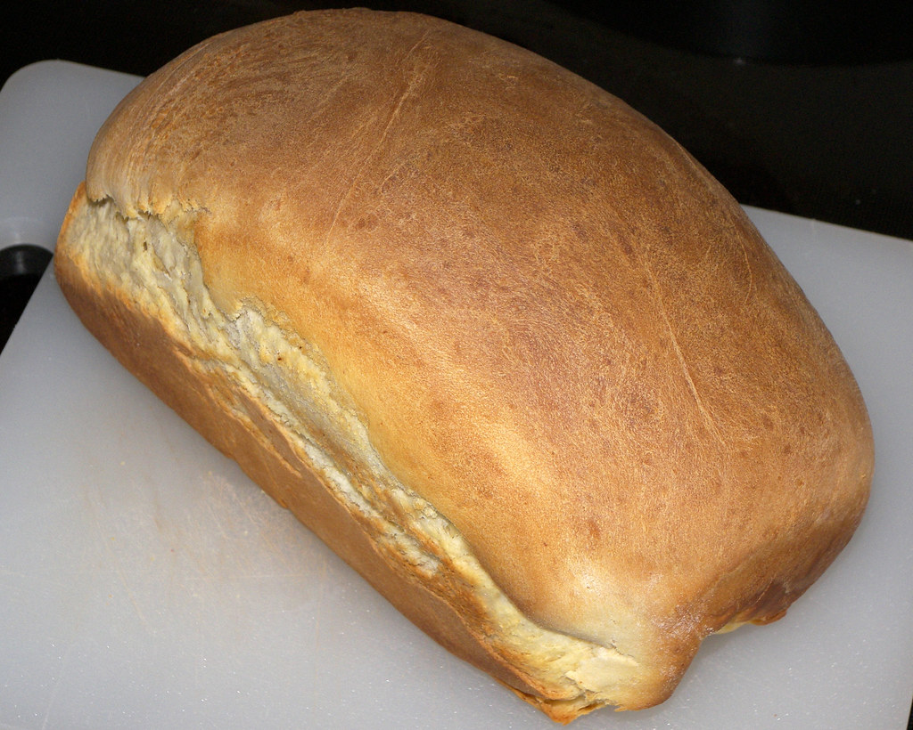
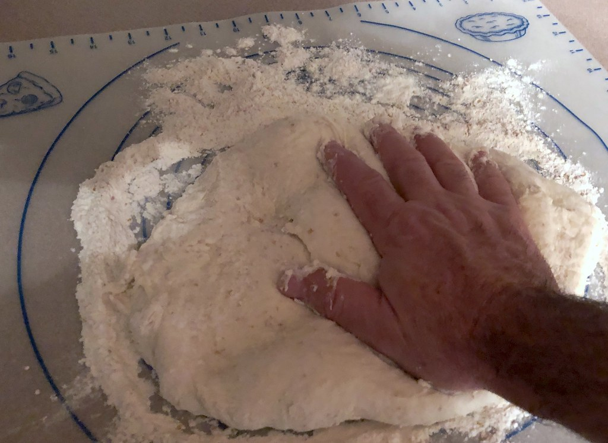

大津町で、十色のパンをお届けして
TOIRO BAKERYは、熊本県菊池郡大津町で、一つひとつのパンを手づくりしているパン屋です。「トイロ」という店名には、十人十色という言葉を重ねています。お客様それぞれに好きなパン、食べたい時間、過ごし方があるように、パンの種類も表情も一つに絞らず、色とりどりに揺れ動いていい。そんな想いから、毎日少しずつ違う品揃えで店頭に立っています。
[プレースホルダー：店主の経歴・パン作りを始めたきっかけ・「トイロ」と名付けた具体的なエピソードは、クライアント様からの詳細ヒアリング後に記載いたします]
大津町、そして菊池郡という土地で暮らす方々の毎日に、少しでも寄り添えるお店であれたらと思っています。[プレースホルダー：地域との関わり・近隣への想い・地元食材の使用状況などの具体的なエピソードがあれば追記いたします]朝の慌ただしい時間にも、ゆっくり休日を過ごす日にも、「今日はこれにしよう」と手に取ってもらえるパンを、これからも焼き続けていきます。